flowchart LR
A[Go to the beach?] --> B{Workday?}
B -->|Yes| C[Don't go]
B -->|No| D{Sunny?}
D -->|Yes| E{"Temp > 18℃ ?"}
E -->|Yes| F[Got to the beach]
E -->|No| G[Don't go]
D -->|Yes| H{"Temp > 23℃ ?"}
H -->|Yes| I[Got to the beach]
H -->|No| J[Don't go]
style A fill:#E0F7FA
style C fill:#FFCDD2
style G fill:#FFCDD2
style C fill:#FFCDD2
style F fill:#C8E6C9
style I fill:#C8E6C9
style J fill:#FFCDD2
DAT158: Machine Learning Engineering and Advanced Algorithms
Module 2 - Machine Learning Models
sma@hvl.no
Module 2
Machine learning models – and how to use them effectively 🔧
Topics for Module 2
Models:
- Linear regression
- Tree-based models
- Decision trees
- Random forests
- Gradient-boosted trees
- Ensemble models
Considerations:
- Model complexity
- Under/-overfitting
Techniques:
- Gradient descent
- Regularisation

Book chapters:
- 4: Training models
- 6: Decision trees
- 7: Ensemble learning and random forests
scikit-learn
machine learning
model assortment
The best model is:
Very dependent on the task.
No free lunch (NFL) theorem
There is (provably) no single machine learning method that will work best on all problems.
In other words:
Under no assumptions about the data, there is no reason to choose a certain ML method (or any optimisation technique in general) over another.
How to choose, then?
- Test
- From experience
Decision trees 🌲
Decision trees
Silly example:
Decision
(= prediction)
Can be re-ordered
Decision trees (cont.)
Silly example:
flowchart LR
A[Go to the beach?] --> B{Workday?}
B -->|Yes| C[Don't go]
B -->|No| D{Sunny?}
D -->|Yes| E{"Temp > 18℃ ?"}
E -->|Yes| F[Got to the beach]
E -->|No| G[Don't go]
D -->|Yes| H{"Temp > 23℃ ?"}
H -->|Yes| I[Got to the beach]
H -->|No| J[Don't go]
style A fill:#E0F7FA
style C fill:#FFCDD2
style G fill:#FFCDD2
style C fill:#FFCDD2
style F fill:#C8E6C9
style I fill:#C8E6C9
style J fill:#FFCDD2
96% would agree
4% would disagree
71% would agree
29% would disagree
29% would agree
71% would disagree
82% would agree
18% would disagree
18% would agree
81% would disagree
ID3 algorithm
function BuildTree(examples, target_feature, features)
# examples is the training data
# target_feature is the feature we want to predict
# features is the list of features present in the data
tree <- a single node, so far without any label
if all examples are of the same classification then
give tree a label equal to the classification
return tree
else if features is empty then
give tree a label equal the most common value of target_feature in examples
return tree
else
best_feature <- the feature from features with highest Importance(examples)
for each value v of best_feature do
examples_v <- the subset of examples where best_feature has the value v
subtree <- BuildTree(examples_v, target_feature, features - {best_feature})
add a branch with label v to tree, and below it, add the tree subtree
return tree
ID3 algorithm
function BuildTree(examples, target_feature, features)
# examples is the training data
# target_feature is the feature we want to predict
# features is the list of features present in the data
tree <- a single node, so far without any label
if all examples are of the same classification then
give tree a label equal to the classification
return tree
else if features is empty then
give tree a label equal the most common value of target_feature in examples
return tree
else
best_feature <- the feature from features with highest Importance(examples)
for each value v of best_feature do
examples_v <- the subset of examples where best_feature has the value v
subtree <- BuildTree(examples_v, target_feature, features - {best_feature})
add a branch with label v to tree, and below it, add the tree subtree
return tree
No need to split
ID3 algorithm
function BuildTree(examples, target_feature, features)
# examples is the training data
# target_feature is the feature we want to predict
# features is the list of features present in the data
tree <- a single node, so far without any label
if all examples are of the same classification then
give tree a label equal to the classification
return tree
else if features is empty then
give tree a label equal the most common value of target_feature in examples
return tree
else
best_feature <- the feature from features with highest Importance(examples)
for each value v of best_feature do
examples_v <- the subset of examples where best_feature has the value v
subtree <- BuildTree(examples_v, target_feature, features - {best_feature})
add a branch with label v to tree, and below it, add the tree subtree
return tree
No need to split
Not
possible
to split
ID3 algorithm
function BuildTree(examples, target_feature, features)
# examples is the training data
# target_feature is the feature we want to predict
# features is the list of features present in the data
tree <- a single node, so far without any label
if all examples are of the same classification then
give tree a label equal to the classification
return tree
else if features is empty then
give tree a label equal the most common value of target_feature in examples
return tree
else
best_feature <- the feature from features with highest Importance(examples)
for each value v of best_feature do
examples_v <- the subset of examples where best_feature has the value v
subtree <- BuildTree(examples_v, target_feature, features - {best_feature})
add a branch with label v to tree, and below it, add the tree subtree
return tree
No need to split
Not
possible
to split
Split on
the best
feature
Finding the best feature
We need to rank the features by how useful it is to split based on its value
A measure is the Gini impurity:
\[ \small G = 1 - \sum_i p_i^2 \]
where \(p_i\) are frequency distributions for each class \(i\)
In the binary case (only positive and negative samples) it becomes
\[ \small G = 1 - p_{\mathrm{\class{color-green}{pos}}}^2 - p_{\mathrm{\class{color-red}{neg}}}^2 \]
Low \(G\) means good predictions
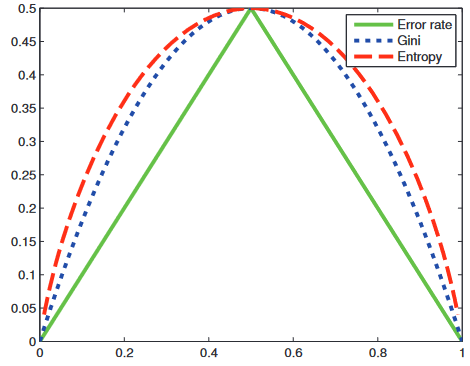
50/50
Only
positive
samples
Only
negative
samples
Finding the best feature (cont.)
Consider outputs of the following hypothetical splits:
flowchart TD
A{Sunny?} -->|Yes| B:::hidden
A --> |No| C["6 positive samples<br>4 negative samples"]
\[ \small G = 1 - \frac{\class{color-green}{6}}{10} - \frac{\class{color-red}{4}}{10} = \class{color-orange}{0.48} \]
flowchart TD
A{Sunny?} -->|Yes| B:::hidden
A --> |No| C["9 positive samples<br>1 negative samples"]
\[ \small G = 1 - \frac{\class{color-green}{9}}{10} - \frac{\class{color-red}{1}}{10} = \class{color-green}{0.18} \]
\[ \small G = 1 - p_{\mathrm{\class{color-green}{pos}}}^2 - p_{\mathrm{\class{color-red}{neg}}}^2 \]
Finding the best feature (cont.)
The best feature \(A\), considering a set of examples \(S\), is the one with the biggest reduction in Gini impurity –
aka the highest information gain
\[ \small Gain(A, S) = G(S) - \sum_{v\in\mathrm{Values}(A)} \frac{|S_v|}{|S|} G(S_v) \]
flowchart TD
A{Sunny?} -->|Yes| B["<em>S</em><sub>Sunny=yes</sub>"]
A --> |No| C["<em>S</em><sub>Sunny=no</sub>"]
style B fill:#C8E6C9
style C fill:#FFCDD2
In the binary case (\(v \in {\mathrm{\class{color-green}{yes}, \class{color-red}{no}}}\)):
\[ \small Gain(\mathrm{Sunny}, S) = G(S) - \left( \frac{|S_{\mathrm{Sunny=\class{color-green}{yes}}}|}{|S|} G_{\mathrm{Sunny=\class{color-green}{yes}}} +\frac{|S_{\mathrm{Sunny=\class{color-red}{no}}}|}{|S|} G_{\mathrm{Sunny=\class{color-red}{no}}} \right) \]
Impurity before splitting
Weighted impurity after splitting
Decision trees so far:
We have an algorithm (ID3) for constructing decision tree, and a measure for ensuring output is optimal.
Let’s extend it into the general CART (Classification and Regression Trees) algorithm, by adding
Continuous inputs
Implement splits as a greater than operation
Continuous output
Output the average value instead of the majority value for each leaf node
flowchart TD
A{Temperature} -->|"≤ 23℃ "| B:::hidden
A --> |"≥ 23℃ "| C:::hidden
flowchart TD A:::hidden --> B["<pre><span style="font-size:20px;">1 1 1 0<br> 0 1 1</span></pre>"]
Label: 1
(majority value)
flowchart TD A:::hidden --> B["<pre><span style="font-size:20px;">2.1 1.0 2.3 0.5<br> 0.5 1.3 1.5</span></pre>"]
Label: 1.1
(average value)
Preventing overfitting
Tree algorithms aim to have the purest possible leaf nodes
-> Leads to “maximal” overfitting.
Mitigation methods:
- Limit complexity
flowchart TD
A{"branch"} --> B{"branch"}
A --> C{"branch"}
B --> D["leaf"]
B --> E["leaf"]
C --> F{"branch"}
C --> G["leaf"]
F --> H["leaf"]
F --> I["leaf"]
style D fill:#B2DFDB
style E fill:#B2DFDB
style G fill:#B2DFDB
style H fill:#B2DFDB
style I fill:#B2DFDB
Limit
max
depth
Require a minimum
number of samples to
end up in each node
Preventing overfitting
Tree algorithms aim to have the purest possible leaf nodes
-> Leads to “maximal” overfitting.
Mitigation methods:
- Limit complexity
- Pruning
flowchart TD
A{"branch"} --> B{"branch"}
A --> C{"branch"}
B --> D["leaf"]
B --> E["leaf"]
C --> F["<s>branch</s><br>leaf"]
C --> G["leaf"]
F --> H["leaf"]
F --> I["leaf"]
style D fill:#B2DFDB
style E fill:#B2DFDB
style G fill:#B2DFDB
style H fill:#B2DFDB
style I fill:#B2DFDB
Preventing overfitting
Tree algorithms aim to have the purest possible leaf nodes
-> Leads to “maximal” overfitting.
Mitigation methods:
- Limit complexity
- Pruning
- Combine an ensemble of trees:
Random forest
flowchart TD
A{"branch"}:::branch --> B{"branch"}:::branch
A --> C{"branch"}:::branch
B --> D["leaf"]:::leaf
B --> E["leaf"]:::leaf
C --> F{"branch"}:::branch
C --> G["leaf"]:::leaf
F --> H["leaf"]:::leaf
F --> I["leaf"]:::leaf
classDef leaf fill:#B2DFDB
classDef branch fill:#eee,opacity:1
flowchart TD
A{"branch"}:::branch --> B{"branch"}:::branch
A --> C{"branch"}:::branch
B --> D["leaf"]:::leaf
B --> E{"branch"}:::branch
C --> F{"branch"}:::branch
C --> G["leaf"]:::leaf
F --> H["leaf"]:::leaf
F --> I["leaf"]:::leaf
E --> J["leaf"]:::leaf
E --> K["leaf"]:::leaf
classDef leaf fill:#B2DFDB
classDef branch fill:#eee,opacity:1
flowchart TD
A{"branch"}:::branch --> B{"branch"}:::branch
A --> C{"branch"}:::branch
B --> D["leaf"]:::leaf
B --> E["leaf"]:::leaf
C --> F["leaf"]:::leaf
C --> G["leaf"]:::leaf
classDef leaf fill:#B2DFDB
classDef branch fill:#eee,opacity:1
Random forests
Ensembles can be great for any kind of ML models.
But:
Standard tree-building algorithms (like ID3) are deterministic
-> Training several trees on the same data, would just yield an ensemble of identical models.
Introduce randomness to the mix:
- Train each model on a ransom subset of data
- At each split, use a random subset of features
“Make each tree worse to make the forest better”
Random forests (cont.)
%%{init:{'flowchart':{'nodeSpacing': 20, 'rankSpacing':100}}}%%
flowchart LR
A["💾 Data"] -->|Randomly drop<br>samples, features| B["🌲<br>Model 1"]
A --> C["🌳<br>Model 2"]
A --> D["🌴<br>Model 3"]
A --> E["🎄<br>Model 4"]
B --> F["Prediction"]
C --> F
D --> F
E --> F
Boosting
The most advanced tree-based ML models rely on the concept of boosting
Create the ensemble iteratively, starting with a single tree model \(f_1\):
\[ \small \class{color-orange}{y} = f_1(\mathbf{x}) + \class{color-green}{r_1} \]
(true value = prediction + residual)
From this, we want to add a now model \(f_2\) to improve on \(f_1\).
AdaBoost
Start with a single model: \(\small\class{color-orange}{y} = f_1(\mathbf{x}) + \class{color-green}{r_1}\)
One way of improving the model is to add a second one (\(f_2\)), where we apply \(\class{color-green}{r_1}\) as weights during training
- “Easy” data points get little importance
- “Difficult” data points get high importance
Get an improved ensemble model:
\[ \small \class{color-orange}{y} = \mathrm{mode}\left[f_1(\mathbf{x}), f_2(\mathbf{x}]\right) + \class{color-green}{r_1} \]
Can repeat this as many times we like – call this the AdaBoost algorithm:
\[ \small \class{color-orange}{\hat{y}} = \mathrm{mode}\left[f_1(\mathbf{x}), f_2(\mathbf{x}), + \dots + f_M{\mathbf{x}}\right] \]
Gradient boosting
Again start with a single model: \(\small\class{color-orange}{y} = f_1(\mathbf{x}) + \class{color-green}{r_1}\)
Another option: Instead of making a second tree to predict \(\class{color-orange}{y}\), have it predict \(\class{color-green}{r_1}\)
Improved prediction:
\[ \small \class{color-orange}{y} = f_1(\mathbf{x}) + \class{color-green}{f_2}(\mathbf{x}) + \class{color-purple}{r_2} \]
Can iterate further with a new model to predict \(\class{color-purple}{r_2}\), and so on
Peek on next week’s concepts: Gradient descent
Remember the loss function, which quantifies the error in prediction \(\class{color-orange}{\hat{y}}\)
Consider the squared-error loss:
\[ \small \begin{align} L &= (\class{color-orange}{y} - \class{color-orange}{\hat{y}})^2 \\ &= (\class{color-orange}{y} - \class{color-purple}{f_n}(\mathbf{x}))^2 \end{align} \]
To minimise this, differentiate and move in the direction of negative gradient:
\[ \small \begin{align} - \frac{\partial L}{\partial \class{color-purple}{f_n}} &= 2(\class{color-orange}{y} - \class{color-purple}{f_n}) \\ &= 2\class{color-purple}{f_{n+1}} \end{align} \]
Boosting can be interpreted as gradient descent in function space
(more next week)
Next iteration!
Ensemble models: Summary
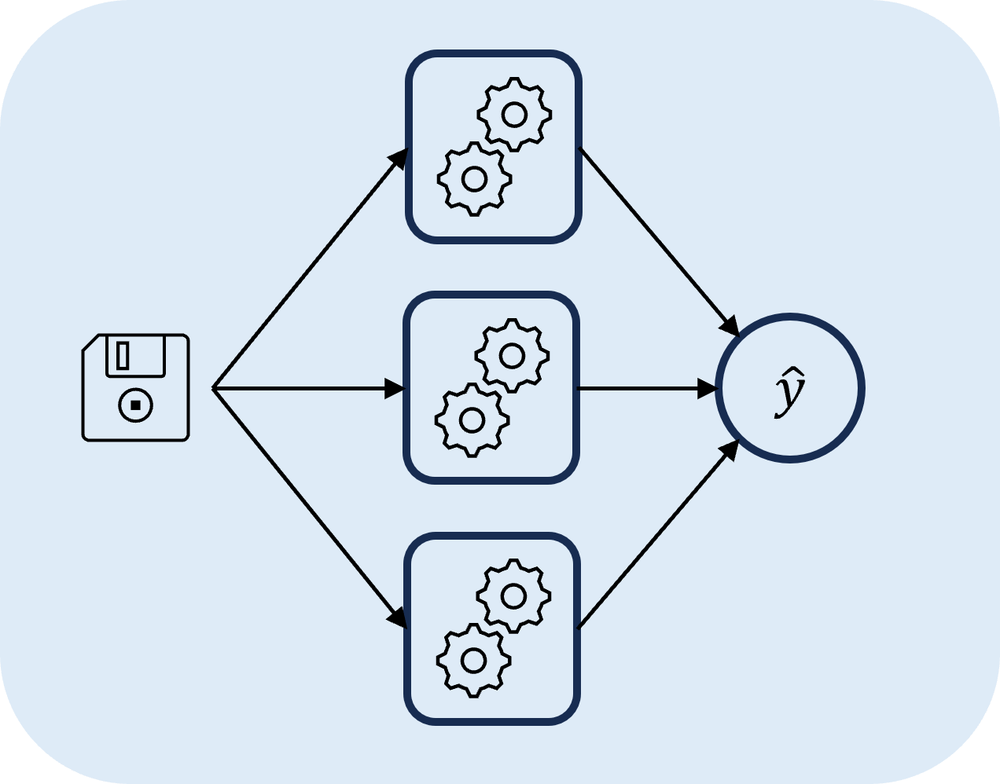
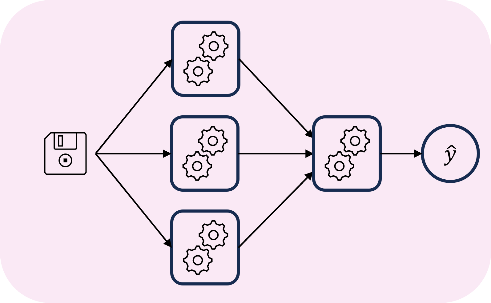
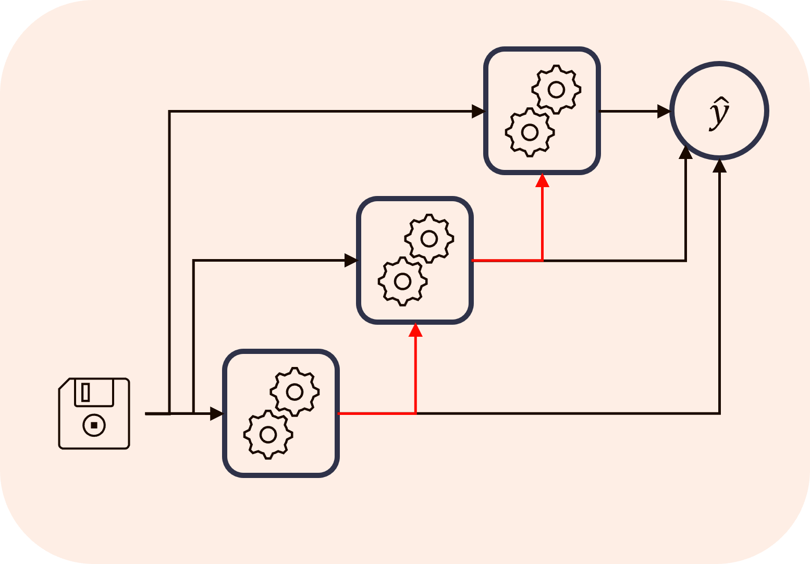
Decision trees in practice
In the exercises this week, we will apply decision trees to a classification task
The behaviour of ML models can be visualised (in low dimensions!) by looking at the decision boundary
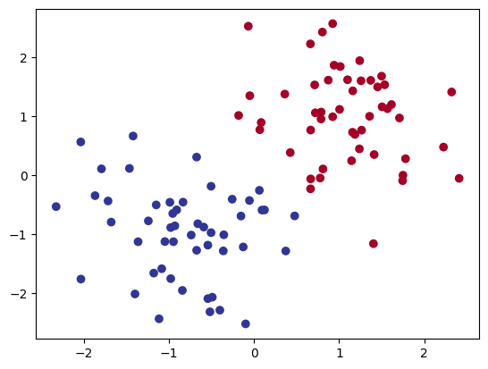
Classification: Decision tree
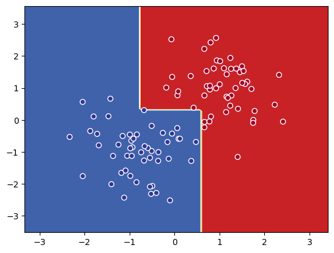
Classification: Random forest
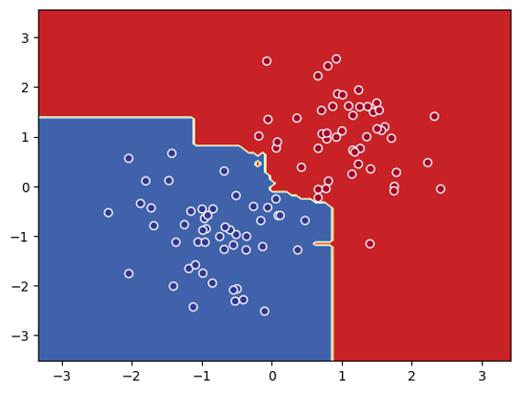
Classification: Boosted decision trees
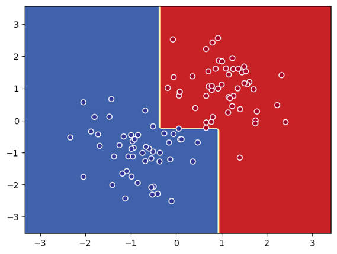
First tree already found
an optimal solution
-> immediate
convergence
Regression case
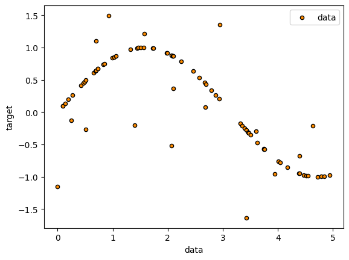
Regression: Decision tree
Hyperparameter selection: max_depth
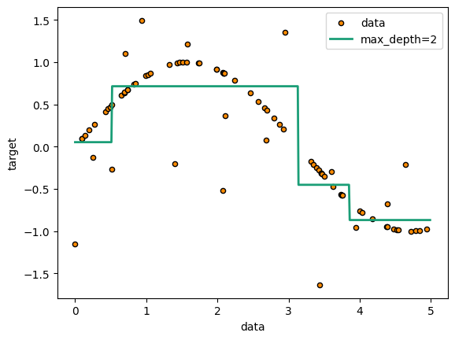
max_depth = 2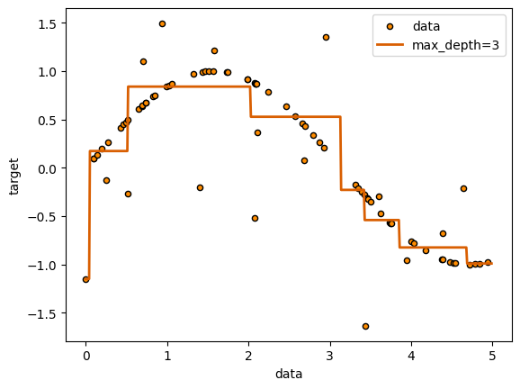
max_depth = 3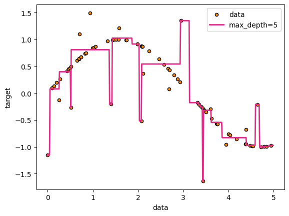
max_depth = 4Regression: Model comparison
Hyperparameter selection: max_depth
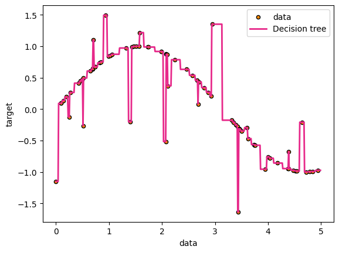
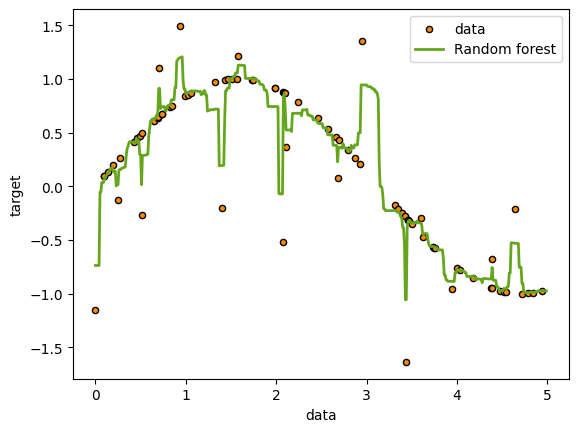
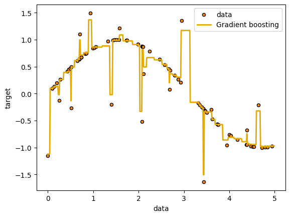